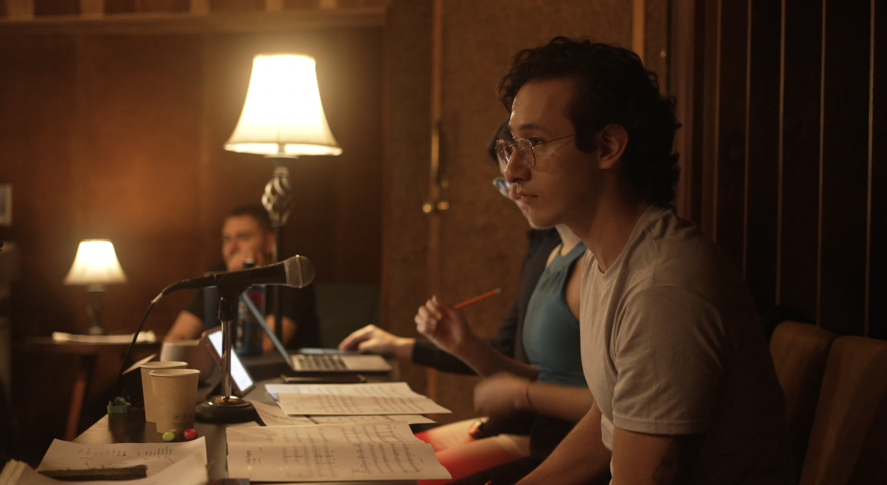
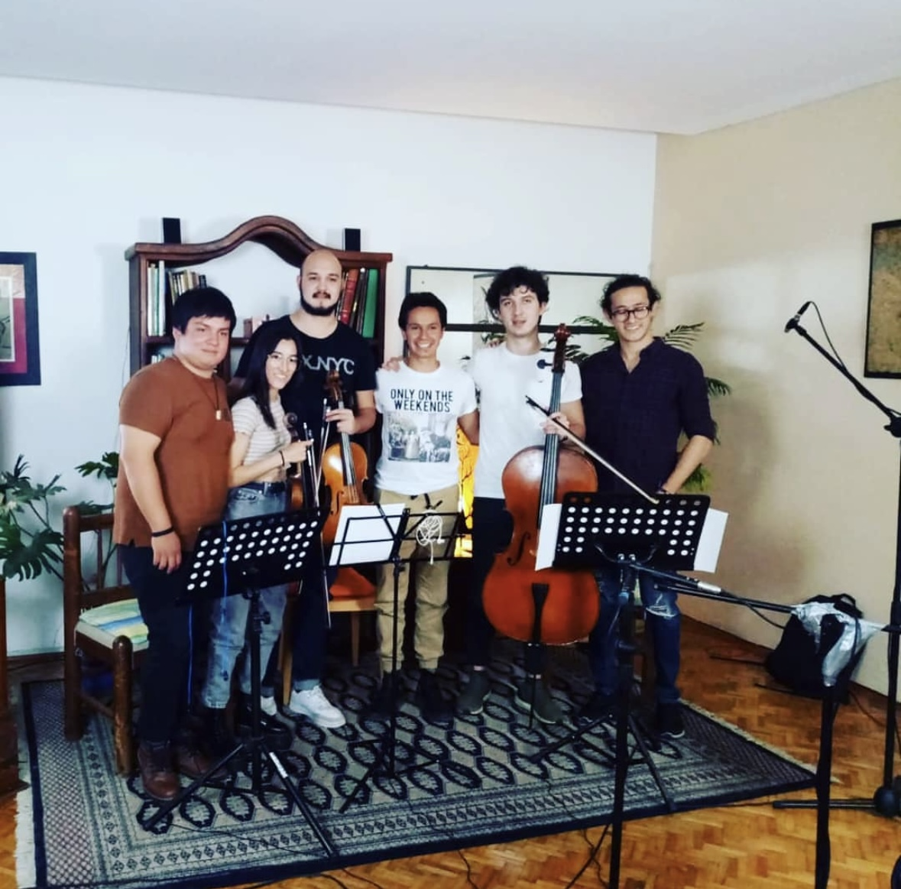

Capitán Barba Negra Re-score
Composición y grabación de música original para cortometraje en Estudios Noviembre, con músicos como parte de la culminación del Diplomado de Música para Cine.
Ver proyecto
Composición y grabación de música original para cortometraje en Estudios Noviembre, con músicos como parte de la culminación del Diplomado de Música para Cine.
Ver proyectoMusicalización de poemas de la autora Julia Ivalú para audiolibro publicado en plataformas por Big Bang Ediciones.
Ver en AmazonComposición y grabación de arreglos para el EP titulado “Catzim”. Preparación de papeles y organización de músicos para grabación.
Escuchar
Composición y grabación de arreglos para la canción “La última vez” del artista Enio Silveti. Dirección de arreglos y preparación musical.
Ver proyectoAsistente de supervisión musical. Selección de música para pitch y licenciamiento de obras con editoras major nacionales e internacionales.
IMDbSupervisión musical para película. Selección de obras de artistas independientes y major. Trato con editores y disqueras nacionales e internacionales.
IMDbSupervisión musical de serie. Selección de obras de catálogo independiente, major y de librería para producción. Grabación de música para producción.
IMDb
Preparación de partituras de arreglos orquestales para shows en vivo de Aída Cuevas como parte de su gira en Estados Unidos.
Asistente de supervisión musical. Selección de música para pitch y licenciamiento de obras con editoras major nacionales e internacionales.
IMDb